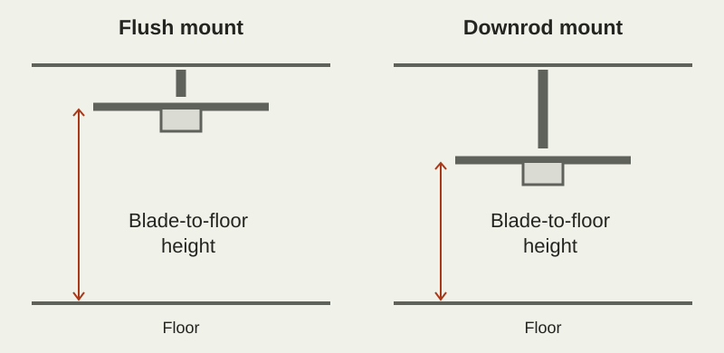

TL;DR
- Flush-mount fans sit close to the ceiling. Downrod fans hang lower and can suit taller ceilings.
- Check blade-to-floor height, the fixture’s lowest point and the gap between blade tips and nearby obstructions.
- For a ceiling fan speaker, plan the ceiling position around the seating as well as the breeze and light.
- Use the exact model’s mounting drawing and approved hardware to confirm the fit.
A flush-mount ceiling fan speaker is worth considering when ceiling height is limited. A downrod model offers a way to bring the fan lower in a taller room. The deciding measurement is the installed height of the blades, followed by the clearance of the light or speaker assembly below them.
Room width is a separate check. A compact mount can carry a wide set of blades, while a smaller fan may hang from a downrod. Measure both directions before choosing.
What changes between the two mounting styles?
A flush mount fixes the fan close to the ceiling. A downrod connects the ceiling canopy to the fan below, adding drop. Hunter’s mounting guidance explains how compatible downrod lengths help position a fan in rooms with taller ceilings.

The installed drop includes both the downrod and the fan body. Use the installation drawing to identify the ceiling-to-blade distance and the unit’s lowest point.
Take four measurements before making a shortlist
- Ceiling height at the mounting point. Measure where the fan will hang, especially in a room with a slope or stepped ceiling.
- Ceiling-to-blade drop. Find this on the model’s drawing, including the approved downrod where one is used.
- Overall drop. Check how far the speaker or light extends below the blades.
- Blade-tip clearance. Measure toward walls, beams, tall cabinets and other nearby obstacles.
For AirFi One, the flush-mount fixture has a 48-inch blade span and a 13-inch overall height. Its installation instructions call for at least 7 feet between the blades and the floor, plus 30 inches between blade tips and the nearest wall or obstruction. Use the blade position from the drawing when checking that floor clearance.
Match the mounting format to the room
| Room condition | Starting point | Deciding check |
|---|---|---|
| Limited ceiling height | Look at low-profile or flush-mount models. | Installed blade clearance and the lowest point of the fixture. |
| Tall, flat ceiling | Compare models that accept a suitable downrod. | Approved downrod length and resulting blade height. |
| Sloped ceiling | Choose a model with a documented mounting option for the slope. | Permitted angle, canopy and any required adapter. |
| Beam or tall storage nearby | Map the full blade sweep before choosing either style. | The model’s clearance to every obstruction. |
| Long room or offset seating | Plan the music source alongside the fan position. | Where people sit in relation to the speaker. |
ENERGY STAR recommends placing the blades 8–9 feet above the floor where ceiling height allows for airflow. The selected model must also meet its specified floor and wall clearances.
A simple height calculation
Consider a room with a 9-foot ceiling and a candidate fan whose drawing shows a 12-inch drop to the blades. Convert the ceiling height to 108 inches, then subtract the 12-inch drop. The blades would sit 96 inches, or 8 feet, above the floor.
The light and speaker may extend farther down. Check that overall dimension separately. Then use the full blade span to check the surrounding space.
On a much taller ceiling, the same short drop leaves the fan farther above the activity area. A downrod model can bring it to a more useful height, provided the chosen rod and mount are approved for that fan.
What the speaker adds to the fit decision
A fan speaker has a fixed sound source overhead. In a dining area, that may place music near the people around the table. In a long living room, the main sofa may sit well away from the fan point.
Choose a fan position that meets the clearance requirements and puts airflow over the area you use. In a long room, mark the main seating area on the plan before finalizing the mounting point. The system-planning guide covers layouts where airflow and listening need different positions.
Apply the measurements to AirFi One
Use the product’s specified dimensions for the clearance calculation, rather than rounding its diameter to the nominal 48-inch size.
AirFi One’s specified overall diameter is 1,228 mm. Half of that is 614 mm. Add the required 30-inch tip clearance (762 mm): allow at least 1,376 mm, about 54.2 inches, from the fan center to the nearest wall or obstruction. Check each side of the mounting point as well as the blade-to-floor height.
After confirming the fit
Use the buying guide to compare light output, dimming, music playback and controls.
Mounting questions
Can I add a downrod to any flush-mount fan?
Use a downrod only when the manufacturer provides that mounting option for the exact model.
Can I use overall fixture height to calculate blade height?
Use the ceiling-to-blade dimension for blade height. Overall fixture height tells you where the lowest part of the light or speaker will sit.
Are flush-mount fans quieter?
Operating sound depends on the model, speed and installation. Compare the candidates at the speeds likely to be used, and keep the listening position similar.